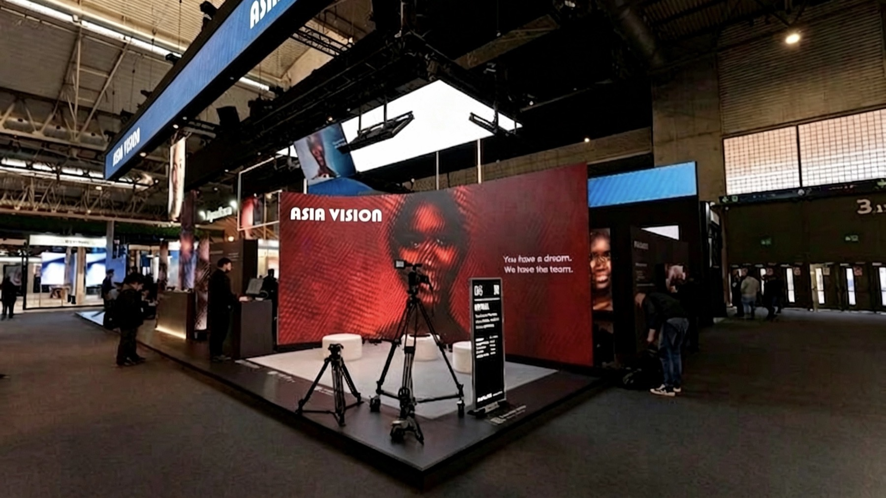
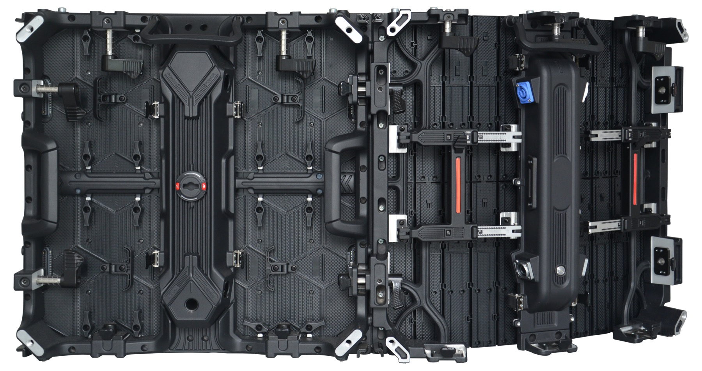

By David
How do you import led displays from china safely? To import led displays from china you need to verify the supplier, agree the specification and Incoterms, arrange payment and shipping, and plan for duty and inspection. Each step protects you from a different risk, and skipping one usually costs far more than the step itself. This 2026 guide walks through the whole process, from first contact to delivery.
China is the source for most of the world's LED displays, so importing from China is normal, not exotic. The difficulty is not finding a supplier but choosing a good one, controlling the specification, and moving the goods safely through payment, shipping, and customs. Buyers who follow a clear process rarely have trouble; buyers who improvise often do.
This guide is written for first-time and experienced importers of LED screens. It covers the sequence of an import project, the documents that matter, and the points where a small check prevents a large loss.
Before discussing price, verify that the supplier is a real manufacturer and not a trading company pretending to be one. Ask for the factory address, a business licence, and the registration of the company name. A supplier who cannot provide these is a risk before the first dollar is spent.
A video call or a factory visit is the strongest check. A supplier who welcomes a live tour of the production line is far more likely to be genuine than one who only sends photographs. If a visit is impossible, ask for a live video walk-through at a specific time, which cannot be faked as easily as a photo set.
The specification is your protection. A vague order invites a screen that meets the letter of the quote but not the intent. Write the pixel pitch, the brightness, the cabinet size, the driver IC, the refresh rate, and the warranty, each as a measurable item. The details you leave out become the supplier's opportunity to save cost.
Published specification sheets for every series are in our LED display series overview — pixel pitch, cabinet size, brightness and weight are the figures you should attach to the purchase order.
| Specification Item | Why It Matters | How to Check |
|---|---|---|
| Pixel pitch and size | Defines the screen | Measured on arrival |
| Brightness in nits | Readability | Light meter test |
| Driver IC brand | Quality signal | Named in the contract |
| Refresh rate | Camera performance | Camera test |
| Warranty terms | After-sale cover | Written in the PO |
Put the specification in the purchase order, not only in an email. The purchase order is the document a dispute will be judged against. If a specification point is not in it, you may not be able to insist on it. This is why a complete PO, even for a small order, is worth the time.
Incoterms decide who arranges and pays for each part of the journey. FOB puts the goods on the ship and passes the risk to you; CIF adds the freight and insurance; DDP delivers to your door with duty paid. Each shifts cost and responsibility, and the right choice depends on your experience and your forwarder.
Many first-time importers choose FOB and use their own forwarder, which gives them control of the freight and insurance. Others prefer DDP for simplicity, accepting a higher price in exchange for no customs work. Whichever you choose, put the Incoterm in the contract and confirm exactly what it includes.
Payment terms are the lever that keeps a supplier honest. A common arrangement is a deposit of around 30 percent with the order and the balance before shipment. The deposit funds production; the balance is your leverage to ensure the screen is built correctly and inspected before it ships.
For larger orders, a letter of credit protects both sides by tying payment to documents. Some buyers use a small trial order and scale up only after the first shipment passes inspection. This stages the risk and tests the supplier with real goods before a large commitment.
LED displays are heavy, fragile, and high-value, so the shipping method and the insurance both matter. Sea freight suits large orders and flexible schedules; air freight suits urgent or small shipments. Whichever you use, insure the goods for their full landed value, including freight and duty.
Cabinet weight and packing volume affect freight more than unit price does; both are published per series — see the COB Z rental series for touring-grade packing data.
Confirm the packing standard before the goods leave. Foam-lined cartons, edge protection, and moisture barriers protect the screens. Photograph the packed goods before the container is sealed, because those photos are your evidence if damage occurs in transit.
On arrival, the goods must clear customs, which means paying any duty and tax and providing the right documents. The commercial invoice, packing list, bill of lading, and any certificates travel with the shipment. An error in the paperwork can hold the goods for days and add storage costs.
| Document | Purpose | Common Error |
|---|---|---|
| Commercial invoice | Value and description | Vague description |
| Packing list | Counts and weights | Mismatched counts |
| Bill of lading | Carriage contract | Wrong consignee |
| Certificate of origin | Duty rate | Missing or incorrect |
| Certificates | Compliance (CE, UL, etc.) | Wrong standard |
Check the duty rate for LED displays in your country and budget for it. The rate depends on the product classification and the origin. A certificate of origin can reduce the duty where a trade agreement applies, so ask the supplier for one where it is relevant.
Inspect the screen before the balance is paid and before it ships. An inspection checks the build, tests the modules, photographs the packing, and confirms the counts. Catching a problem at the factory is far cheaper than catching it after the container arrives, when a fix means shipping parts or personnel.
The inspection is the point where the specification you wrote becomes a fact. If the screen does not match, you have leverage before the balance is paid. After payment and shipment, that leverage is gone, which is why the inspection should always come before the final payment.
The first mistake is paying in full upfront, which removes all leverage. The second is a vague specification, which lets the supplier choose cheap components. The third is choosing the cheapest quote without checking what it leaves out. The fourth is skipping the inspection and discovering problems on arrival.
A fifth mistake is ignoring duty and shipping costs when comparing quotes, so the landed cost is higher than expected. A sixth is buying no spares. Each of these is avoided by following the process, and each is expensive to correct after the goods arrive.
The best import experience comes from a long-term relationship with a good supplier. A supplier who answers technical questions, provides documentation, and supports spares is worth more than the cheapest option. The first order tests the supplier; if it goes well, later orders become simpler and often cheaper.

Build the relationship around clear specifications and honest communication. Suppliers respond well to buyers who know what they want and check what they receive. That combination produces good screens at fair prices, order after order.
Importing LED displays from China is a process, not a gamble. Buyers who verify the supplier, fix the specification, choose protective payment terms, insure the shipment, plan for duty, and inspect before payment get the screens they ordered at the cost they expected. The process is the same for a single screen or a hundred.
Once the first import succeeds, turn the steps into a repeatable process. Keep the supplier's details, the specification template, the inspection checklist, and the customs documents in one place. The second order then takes a fraction of the time, because the groundwork is already done.
Track the landed cost of each order so you can compare suppliers fairly over time. A supplier who is cheap on the factory price but expensive on freight or slow on delivery costs more than the number suggests. The landed cost record makes those differences visible and stops price alone from deciding the next order.

Tell us your project, and we will guide you through specification, payment, shipping, and duty for your first import.
Request Import GuideChat on WhatsApp